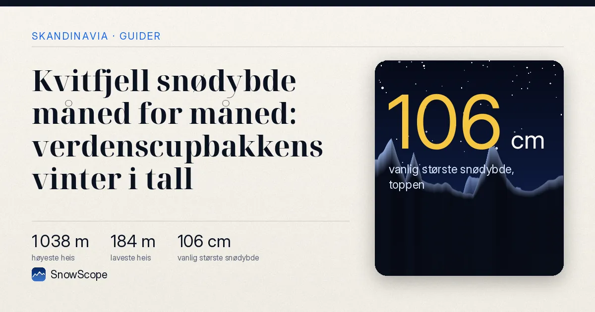

Kvitfjell snødybde måned for måned: verdenscupbakkens vinter i tall
Kvitfjell ble bygget for OL-utforen og er fortsatt verdenscuparena for fartsdisiplinene hver vinter, så snøen må sitte på senvinteren fremfor alt. Fjellet går fra 184 til 1038 moh. med 38 km kartlagte nedfarter på 14 heiser. Vår snøhistorikk fra 46 vintre viser et stabilt innlandsmønster: sen start, dyp mars og en lang hale inn i våren på toppen.
Se snøprognosen for Kvitfjell direkte i SnowScope-appenSnødybde, puddervarsler og 3D-kartet, gratis.

Sesongstart: første snø og de tynne ukene
Midt på fjellet (611 moh.) kommer første snø innen 15. oktober i halvparten av vintrene. November er tynn, 22 cm midt på, og bunnen på 184 moh. er stort sett bar med 19 cm. Desember gir første ordentlige dekke: 47 cm nederst, 51 cm midt på, 55 cm på toppen.
Januar til mars: fartsmånedene
Januar har 75 cm midt på og 78 cm på toppen. Februar og mars er vinterens kjerne, 82 og 84 cm midt på, 86 og 90 cm på toppen. Renn-ukene i slutten av februar og starten av mars treffer den dypeste delen av kalenderen.
Sikreste uke midt på fjellet er uke 11, med vanlig dybde 85 cm og minst 50 cm i alle tidligere vintre. Midt på holder det 50 cm eller mer i 11 uker i ni av ti vintre; vanlig vintertopp der er 97 cm, mellom 66 og 136 cm.
Lite fjell, stor bunn
Uvanlig for Norge er bunnen nesten like snørik som midten: vanlig topp 95 cm mot 97 cm midt på. Dalen ligger i en kald lomme i Gudbrandsdalen, så de nedre løypene beholder snøen lenge. Toppen legger på til 106 cm.
April og mai: vår øverst
April viser fortsatt 86 cm på toppen og 74 cm midt på i et vanlig år, nok til påskeski.
Måned for måned i tre høyder
I desember har en vanlig vinter 47 cm nederst (184 moh.), 51 cm midt på fjellet (611 moh.) og 55 cm på toppen (1038 moh.). I januar har en vanlig vinter 72 cm nederst (184 moh.), 75 cm midt på fjellet (611 moh.) og 78 cm på toppen (1038 moh.). I februar har en vanlig vinter 80 cm nederst (184 moh.), 82 cm midt på fjellet (611 moh.) og 86 cm på toppen (1038 moh.).
I mars har en vanlig vinter 80 cm nederst (184 moh.), 84 cm midt på fjellet (611 moh.) og 90 cm på toppen (1038 moh.). I april har en vanlig vinter 64 cm nederst (184 moh.), 74 cm midt på fjellet (611 moh.) og 86 cm på toppen (1038 moh.).
En dårlig vinter og en god vinter
Spriket betyr like mye som midten. Midt på fjellet hadde ni av ti tidligere mars-måneder minst 62 cm og én av ti 114 cm eller mer; på toppen går samme sprik fra 70 til 117 cm.
Over hele vinteren gikk toppen midt på fjellet fra 66 cm i den dårligste vinteren til 136 cm i den beste, rundt vanlige 97 cm; på toppen fra 69 til 137 cm rundt 106 cm. Snø dekket bakken midt på fjellet i 208 dager i en vanlig vinter, og første snø la seg der innen 15. oktober i halvparten av vintrene.
Hva har endret seg på 46 vintre
Toppens vanlige maksimum gikk fra 106 cm i de første 15 vintrene til 97 cm i de siste 15; bunnen fra 100 til 94 cm. Dager med snø midt på fjellet gikk fra 212 til 194. Sist vinter toppet midt på fjellet på 80 cm.
Tips til skiløpere
- Slutten av februar og mars er ukene å bestille.
- Desember bygger på snøproduksjon nederst; naturlig snø øverst.
- Dybdene er en modell av tidligere vintre for området, ikke anleggets målinger; heisstatus på den offisielle siden.
Referanser og kilder
- Wikipedia, «Kvitfjell», hentet 22 November 2026. no.wikipedia.org/wiki/Kvitfjell
Om tallene
Heiser, bakker og reise: kildene nedenfor, kontrollert på datoen som vises.
Offisielle snøskredvarsler: Varsom (NVE)
Siter denne rapporten
For forskning, undervisning eller presse: tallene og diagrammene kan brukes fritt under CC BY 4.0 med denne kildehenvisningen.
SnowScope (2026), Kvitfjell snødybde måned for måned: verdenscupbakkens vinter i tall, https://snowscope.app/blog/nb/2026/11/kvitfjell-snow-depth-world-cup-hill-by-month.html, hentet 2026-11-22
SnowScope (Atlas Labs). (2026, November 22). Kvitfjell snødybde måned for måned: verdenscupbakkens vinter i tall. SnowScope snow reports. https://snowscope.app/blog/nb/2026/11/kvitfjell-snow-depth-world-cup-hill-by-month.html
BibTeX
@misc{snowscope2026kvitfjellsnowdepthworldc,
author = {{SnowScope (Atlas Labs)}},
title = {Kvitfjell snødybde måned for måned: verdenscupbakkens vinter i tall},
year = {2026},
month = nov,
howpublished = {\url{https://snowscope.app/blog/nb/2026/11/kvitfjell-snow-depth-world-cup-hill-by-month.html}},
note = {Published 2026-11-22 11:12 UTC; accessed 2026-11-22}
}· CC BY 4.0 · Metoder, data og verktøy →
Kvitfjell: snø og temperatur etter høyde, i vinter sammenlignet med i fjor (verktøy) →
Følg Kvitfjell
Gratis: en melding når nysnø er på vei, og prognosen hver morgen.